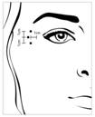

RÉSUMÉ DES CARACTÉRISTIQUES DU PRODUIT
ANSM - Mis à jour le : 22/10/2014
BOCOUTURE 4 unités/0,1 ml poudre pour solution injectable
2. COMPOSITION QUALITATIVE ET QUANTITATIVE
1 flacon contient 50 unités DL50* de toxine botulinique de type A (150kD), sans protéines complexantes.
0,1 ml de solution contient 4 unités DL50* de toxine botulinique de type A (150 kD), sans protéines complexantes, une fois reconstituée avec 1,25 ml.
*Une unité correspond à la dose létale moyenne (DL50) du produit reconstitué et injecté par voie intrapéritonéale chez la souris dans des conditions définies.
Pour la liste complète des excipients, voir rubrique 6.1.
Poudre pour solution injectable.
Poudre blanche.
4.1. Indications thérapeutiques
BOCOUTURE est indiqué dans la correction temporaire :
· des rides verticales intersourcilières (rides glabellaires) modérées à sévères observées lors du froncement des sourcils,
· des rides latérales périorbitaires (rides de la patte d’oie) modérées à sévères observées lors d’un sourire forcé
chez l'adulte de moins de 65 ans, lorsque la sévérité de ces rides entraîne un retentissement psychologique important chez le patient.
4.2. Posologie et mode d'administration
Les doses recommandées de BOCOUTURE ne sont pas interchangeables avec les autres préparations de toxine botulinique.
Pour une information détaillée sur les études cliniques comparant BOCOUTURE à la toxine botulinique de type A conventionnelle (900 kD), voir rubrique 5.1.
BOCOUTURE doit être uniquement administré par des médecins ayant les qualifications adéquates, l'expérience de ce traitement et disposant d'un équipement approprié.
Après reconstitution, BOCOUTURE est destiné à être injecté par voie intramusculaire. BOCOUTURE doit être immédiatement utilisé et est destiné à traiter un seul patient au cours d'une même séance.
Pour l’élimination des flacons, voir les instructions en rubrique 6.6.
BOCOUTURE doit être injecté à l’aide d’une aiguille stérile fine (ex : 30 gauge).
Rides verticales intersourcilières (rides glabellaires)
Posologie
Après reconstitution de BOCOUTURE (50 unités/1,25 ml), le volume d'injection recommandé est de 0,1 ml (4 unités), dans chacun des 5 sites d'injection : 2 injections dans chaque muscle corrugator et une injection dans le muscle procerus, soit une dose standard de 20 unités. Le médecin peut augmenter cette dose selon les besoins individuels du patient jusqu'à 30 unités. Un délai d'au moins 3 mois doit être respecté entre les traitements.
Une amélioration des rides verticales intersourcilières (rides glabellaires) est généralement observée en 2 à 3 jours ; l'effet maximal étant observé au 30ème jour. L'effet persiste jusqu'à 4 mois après l'injection.
Méthode d’administration
Avant et pendant l'injection, le pouce et l'index doivent être fermement placés sous le rebord orbitaire afin d'éviter l'extravasation du produit lors de l'injection. L'aiguille doit être orientée vers le haut et vers la ligne médiane. Afin de réduire le risque de ptose, les injections à proximité du muscle releveur de la paupière supérieure et dans la partie crâniale du muscle orbiculaire doivent être évitées. Les injections dans le muscle corrugator doivent être effectuées dans la partie médiane de ce muscle et dans la partie centrale à au moins 1 cm au-dessus de l’arcade sourcilière.
Rides latérales périorbitaires (rides de la patte d’oie) observées lors d’un sourire forcé
Posologie
Après reconstitution de BOCOUTURE (50 unités/1,25 ml), le volume d'injection recommandé de 0,1 ml (4 unités) est injecté bilatéralement dans chacun des 3 différents sites d'injection. Une injection de 0,1 ml est réalisée à environ 1 cm du rebord orbitaire en position latérale. Les deux autres injections de 0,1 ml chacune sont réalisées à environ 1 cm au-dessus ou au-dessous du 1er point d’injection.

La dose totale standard recommandée par séance d’injection est de 12 unités par côté (soit une dose standard globale de 24 unités)
Une amélioration des rides latérales périorbitaires (rides de la patte d’oie) est observée lors d’un sourire forcé au cours des 6 premiers jours avec un effet maximal au 14ème jour. L’effet persise jusqu’à 3 mois après l’injection.
Aucune donnée d’efficacité ou de sécurité du traitement des rides latérales périorbitaires observées lors d’un sourire forcé n’est actuellement disponible au-delà de deux injections espacées de 4 mois.
Méthode d’administration
Pour éviter la diffusion de BOCOUTURE, les injections doivent être réalisées par voie intramusculaire au niveau des muscles orbiculaires, directement sous le derme. Les injections trop proches du muscle grand zygomatique doivent être évitées de manière à prévenir une ptose des paupières.
Toutes les indications
Les intervalles entre deux séances de traitement ne doivent pas être inférieurs à 3 mois. En cas d’échec thérapeutique ou de diminution de l’effet après des injections répétées, il convient d’envisager des méthodes de traitement alternatives.
Sujet âgé
Les données des études cliniques de phase 3 chez des sujets de plus de 65 ans sont limitées. Jusqu'à ce que des études soient conduites dans ce groupe d'âge, l'utilisation de BOCOUTURE chez des patients de plus de 65 ans n'est pas recommandée.
Population pédiatrique
La sécurité et l'efficacité de BOCOUTURE pour le traitement des rides verticales intersourcilières et des rides latérales périorbitaires observées lors d’un sourire forcé n'ont pas été étudiées chez les sujets de moins de 18 ans. Dans ces conditions, l'utilisation de BOCOUTURE chez ces sujets n'est pas recommandée.
Informations générales
En l'absence d'amélioration un mois après la première séance d'injections, il y a lieu :
· d'analyser les causes de non-réponse, par exemple injection dans le mauvais muscle, technique d'injection, dose insuffisante, formation d'anticorps neutralisant la neurotoxine,
· de réévaluer la pertinence du traitement par la toxine botulinique de type A,
· en l'absence d'effets indésirables lors de la première séance d’injections, de pratiquer une deuxième séance d’injections dans les conditions suivantes :
1) ajuster la dose pour le traitement des rides glabellaires, en tenant compte de l'échec du traitement précédent ;
2) respecter un intervalle minimal de 3 mois entre les 2 séances d'injections.
· Hypersensibilité à la substance active ou à l'un des excipients mentionnés dans la rubrique 6.1.
· Troubles généralisés de l'activité musculaire (ex: myasthénie grave, syndrome de Lambert-Eaton).
· Existence d'une infection ou d'une inflammation au site d'injection proposé.
4.4. Mises en garde spéciales et précautions d'emploi
BOCOUTURE est indiqué pour traiter un seul patient au cours d'une même séance. Des précautions doivent être prises lors de la préparation et de l'administration du produit, ainsi que pour l'inactivation et l'élimination de la solution reconstituée non utilisée (voir rubrique 6.6).
Des précautions doivent être prises afin de s'assurer que BOCOUTURE n'est pas injecté dans un vaisseau sanguin.
Des effets indésirables pouvant être liés à la diffusion de la toxine à distance du site d'injection ont été très rarement rapportés (voir rubrique 4.8). Les patients traités à dose thérapeutique peuvent présenter une faiblesse musculaire exagérée. L'injection de BOCOUTURE n'est pas recommandée chez les patients ayant des antécédents de dysphagie ou de pneumopathie d'inhalation.
Les patients et leur entourage doivent être avertis de la nécessité de consulter immédiatement un médecin en cas d'apparition de troubles de la déglutition, de l'élocution ou de troubles respiratoires.
Une réaction anaphylactique peut survenir dans de rares cas après l'injection d'une neurotoxine botulinique de type A (voir rubrique 4.8). Adrénaline et autres traitements possibles de l'anaphylaxie doivent être à disposition.
Avant toute administration de BOCOUTURE, il est essentiel de se familiariser avec l'anatomie du patient et de toute modification anatomique liée à une intervention chirurgicale antérieure.
BOCOUTURE doit être utilisé avec précaution :
· en cas de troubles hémorragiques,
· chez les patients sous traitement anticoagulant ou prenant un traitement à des doses anticoagulantes,
· chez les patients souffrant de sclérose latérale amyotrophique ou d'autres troubles entraînant un dysfonctionnement neuromusculaire périphérique,
· dans les muscles cibles qui présentent une faiblesse prononcée ou une atrophie.
Des injections trop fréquentes ou à trop fortes doses peuvent augmenter le risque de formation d'anticorps susceptibles d'induire un échec au traitement, même si le produit est utilisé dans d'autres indications (voir rubrique 4.2).
BOCOUTURE contient de l'albumine, un dérivé du sang humain. La fabrication de médicaments dérivés du sang ou de plasma humain implique d'une part, des mesures standards de prévention des infections telles que la sélection soigneuse des donneurs, l'analyse des dons individuels et des pools plasmatiques pour la détection de marqueurs spécifiques d'une infection et d'autre part, l'introduction d'étapes spécifiques de fabrication pour inactiver ou éliminer les virus. Malgré ces mesures, le risque de transmission d'agents infectieux ne peut jamais être totalement écarté. Cela s'applique aussi aux virus inconnus ou émergents ou à d'autres types d'agents infectieux.
Aucun rapport de transmission virale n'a été rapporté avec l'albumine fabriquée en conformité avec les spécifications de la Pharmacopée Européenne.
4.5. Interactions avec d'autres médicaments et autres formes d'interactions
Aucune étude d'interaction n'a été réalisée.
En théorie, l'effet de la neurotoxine botulinique peut être potentialisé par les aminosides ou par d'autres médicaments qui bloquent la transmission neuromusculaire, tels que les myorelaxants de type tubocurarine.
Par conséquent, l'administration concomitante de BOCOUTURE avec des aminosides ou de la spectinomycine doit être effectuée avec prudence. Les myorelaxants périphériques sont à utiliser avec précaution; au besoin en diminuant leur dose de départ ou en utilisant une substance à action intermédiaire comme le vécuronium ou l'atracurium plutôt que des substances ayant des effets prolongés.
Les amino-4-quinoléines peuvent réduire l'effet de BOCOUTURE.
Il n'existe pas de données pertinentes sur l'utilisation de la toxine botulinique de type A pendant la grossesse. Les études chez l'animal ont mis en évidence une toxicité sur la reproduction (voir rubrique 5.3). Le risque potentiel chez l'homme n'est pas connu.
Par conséquent, BOCOUTURE ne doit pas être utilisé pendant la grossesse à moins d'une nécessité absolue.
Allaitement
Il n'existe pas de données sur le passage de la neurotoxine botulinique de type A dans le lait maternel. Par conséquent, BOCOUTURE ne doit pas être utilisé pendant l'allaitement.
Fertilité
Il n’existe pas de données cliniques concernant les effets de l’utilisation de BOCOUTURE sur la fertilité. Les études menées chez l’animal n’ont pas montré d’effet sur la fertilité du mâle ou de la femelle (voir rubrique 5.3).
4.7. Effets sur l'aptitude à conduire des véhicules et à utiliser des machines
BOCOUTURE a une influence légère à modérée sur l'aptitude à conduire et à utiliser des machines. Il existe un risque potentiel de faiblesse musculaire localisée ou de troubles de la vision liés à l'emploi de ce médicament, susceptibles d'altérer temporairement la conduite de véhicules ou l'utilisation de machines.
Les conducteurs de véhicules et les utilisateurs de machines doivent être informés sur les risques potentiels d'asthénie, de faiblesse musculaire, de vertiges ou de troubles de la vision liés à l'emploi de ce médicament, pouvant rendre dangereuse la conduite de véhicules et l'utilisation de machines.
En général, les effets indésirables sont observés au cours de la première semaine qui suit l'injection et sont transitoires. Ils peuvent être liés au principe actif et/ou à la technique d'injection.
Une faiblesse musculaire localisée est un effet pharmacologique attendu de la toxine botulinique. La ptose palpébrale, qui peut être causée par la technique d'injection, est en relation avec l'effet pharmacologique de BOCOUTURE.
Une douleur localisée, une sensibilité exacerbée, un prurit, un œdème et/ou un hématome liés à l'injection peuvent apparaître. L'anxiété avant l'injection peut induire une réaction vagale temporaire telle qu'une syncope, des troubles de la circulation, des nausées ou des acouphènes.
Fréquence d'apparition
La fréquence des effets indésirables, basée sur l'expérience clinique, est définie comme suit: très fréquent (≥1/10); fréquent (≥1/100, <1/10); peu fréquent (≥1/1.000, <1/100); rare (≥1/10.000, <1/1.000); très rare (<1/10.000).
Liste des effets indésirables pour les rides verticales intersourcilières (rides glabellaires)
Les effets indésirables suivants ont été rapportés avec BOCOUTURE. De plus, les effets indésirables observés au cours des études cliniques avec le produit comparateur contenant le complexe conventionnel de toxine botulinique de type A, sont présentés et identifiés par un astérisque. Ces effets indésirables pourraient aussi être observés avec BOCOUTURE :
|
Infections et infestations |
|
|
|
Peu fréquent : |
bronchite, rhino-pharyngite, grippe, infection*. |
|
|
Troubles psychiatriques |
|
|
|
Peu fréquent : |
dépression, insomnie. |
|
|
Troubles du système nerveux |
|
|
|
Fréquent : |
maux de tête. |
|
|
Peu fréquent : |
parésie de la face (ptose du sourcil), malaise vagal, paresthésie*, vertiges*. |
|
|
Troubles oculaires |
|
|
|
Peu fréquent : |
œdème palpébral, ptose, vision trouble, blépharite*, douleur oculaire*. |
|
|
Troubles auriculaires ou labyrinthiques |
|
|
|
Peu fréquent : |
acouphènes. |
|
|
Troubles gastro-intestinaux |
|
|
|
Peu fréquent : |
nausée, sècheresse buccale*. |
|
|
Affections de la peau et du tissu sous-cutané |
|
|
|
Fréquent : |
prurit, nodule, photosensibilisation*, sècheresse cutanée*. |
|
|
Troubles musculo-squelettiques et du tissu conjonctif |
|
|
|
Fréquent : |
troubles musculaires (élévation du sourcil), sensation de lourdeur. |
|
|
Peu fréquent : |
tressautements musculaires, crampes musculaires. |
|
|
Troubles généraux et anomalies au site d'administration |
|
|
|
Peu fréquent : |
réactions au site d'injection (bleus, prurit), sensibilité exacerbée, syndrome pseudo-grippal, fatigue. |
|
Liste des effets indésirables pour les rides latérales périorbitaires observées lors d’un sourire forcé (rides de la patte d’oie)
Les effets indésirables suivants ont été rapportés avec BOCOUTURE :
Troubles oculaires
Fréquent : œdème de la paupière, sécheresse oculaire
Troubles généraux et réactions au site d’injection
Fréquents : hématome au site d’injection
Données après commercialisation
Des syndromes pseudo-grippaux et des réactions d’hypersensibilité telles que gonflement, œdème (également à distance du site d’injection), érythème, prurit, rash (localisé ou généralisé) ainsi que des cas d’essoufflements ont été rapportés.
Généralités
Lors d'un traitement avec des toxines botuliniques dans d'autres indications, des effets indésirables liés à la diffusion de la toxine à distance du site d'injection ont été très rarement observés (faiblesse musculaire importante, dysphagie et pneumopathie d'inhalation pouvant parfois être fatales) (voir rubrique 4.4). Des réactions d’hypersensibilité sévères et/ou immédiates incluant un choc anaphylactique, une maladie sérique, un œdème des tissus mous et une dyspnée ont été très rarement rapportées. Certaines de ces réactions ont été rapportées avec la toxine botulinique de type A conventionnelle seule ou en association avec d’autres agents connus pour provoquer des réactions similaires. Des effets indésirables de ce type ne peuvent être totalement écartés avec BOCOUTURE.
Déclaration des effets indésirables suspectés
La déclaration des effets indésirables suspectés après autorisation du médicament est importante. Elle permet une surveillance continue du rapport bénéfice/risque du médicament. Les professionnels de santé doivent déclarer tout effet indésirable suspecté via le système national de déclaration : Agence nationale de sécurité du médicament et des produits de santé (Ansm) et réseau des Centres Régionaux de Pharmacovigilance. Site internet : www.ansm.sante.fr.
Symptômes de surdosage
L'augmentation des doses de toxine botulinique peut provoquer, à distance du site d'injection, une paralysie neuromusculaire prononcée. Les symptômes de surdosage n'apparaissent pas immédiatement après l'injection et peuvent se traduire par une faiblesse généralisée, une ptose, une diplopie, une difficulté d'élocution, une paralysie des muscles respiratoires ou des difficultés de déglutition pouvant conduire à une pneumopathie d'inhalation.
Mesures en cas de surdosage
En cas de surdosage, le patient doit être placé sous surveillance médicale pendant plusieurs jours. Si des signes d'intoxication apparaissent, une hospitalisation avec des mesures d'assistance est nécessaire. En cas de paralysie des muscles respiratoires, l'intubation et la respiration artificielle s'imposeront jusqu'à l'amélioration des symptômes.
5. PROPRIETES PHARMACOLOGIQUES
5.1. Propriétés pharmacodynamiques
Classe pharmacothérapeutique: autres myorelaxants à action périphérique, Code ATC: M03AX01.
La neurotoxine botulinique de type A bloque la transmission cholinergique au niveau de la jonction neuromusculaire en inhibant la libération d'acétylcholine. Ces terminaisons nerveuses ne répondent plus aux impulsions nerveuses empêchant la sécrétion des neurotransmetteurs (dénervation chimique). La récupération d'une transmission par impulsion est rétablie par la formation de nouvelles terminaisons nerveuses et la reconnexion aux plaques motrices.
Le mécanisme d'action de la toxine botulinique de type A sur les terminaisons nerveuses cholinergiques peut être décrit par un procédé séquentiel en quatre temps:
· Liaison: la chaîne lourde de la neurotoxine botulinique de type A se fixe avec une sélectivité et une affinité exceptionnellement fortes aux récepteurs cholinergiques.
· Internalisation: invagination de la membrane nerveuse terminale et encapsulation de la toxine dans la terminaison nerveuse (endocytose).
· Translocation: la fonction amine terminale de la chaîne lourde de la neurotoxine forme un pore dans la membrane de la vésicule; le pont disulfure est rompu et la chaîne légère de la neurotoxine passe à travers ce pore dans le cytosol.
· Inhibition: lorsque la chaîne légère est libérée, elle clive de façon très sélective une protéine cible (SNAP 25) qui est indispensable à la libération d'acétylcholine.
Le rétablissement complet de la fonction motrice/conduction nerveuse intervient normalement en l'espace de 3 à 4 mois, lorsque les terminaisons nerveuses se régénèrent et rétablissent leurs connexions avec la plaque motrice.
Résultats des études cliniques
Rides verticales intersourcilières (rides glabellaires)
Un total de 447 sujets présentant des rides verticales intersourcilières d'intensité modérée à sévère au maximum du froncement ont été inclus dans des études en vue de démontrer l'efficacité de BOCOUTURE dans l'indication des rides glabellaires. 169 sujets (≥ 18 ans) ont été traités avec BOCOUTURE au cours de la 1ère période de l'étude pivot de phase 3, contrôlée, réalisée en double-aveugle et 236 sujets ont été traités dans la 2ème période (OLEX) réalisée en ouvert. Cette étude a montré une différence statistiquement significative et cliniquement pertinente en faveur de 20U BOCOUTURE vs placebo. Ceci a été confirmé par un plus grand taux de répondeurs à 30 jours validé sur l'échelle Facial Wrinkle Scale au maximum de froncement. L'évaluation réalisée par l'investigateur et par le patient a montré une proportion de répondeurs significativement plus grande chez les patients recevant 20U de BOCOUTURE comparativement au groupe placebo.
Une analyse en sous-groupe a montré une efficacité moindre chez les patients ≥50 ans (n=56) par rapport aux patients < 50 ans (n=113) ainsi que chez les hommes (n=33) par comparaison aux femmes (n=136).
BOCOUTURE a montré une efficacité non-inférieure par rapport à un comparateur contenant de la toxine botulinique de type A conventionnelle (900 kD) dans une étude comparative de phase III en dose unique chez des patients présentant des rides glabellaires (n=381). Les résultats de cette étude suggèrent une efficacité et un profil de sécurité comparables de BOCOUTURE et de ce comparateur pour un ratio de conversion des doses de 1:1 (voir rubrique 4.2).
Rides latérales périorbitaires (rides de la patte d’oie) observées lors d’un sourire forcé
Dans une étude de phase III, 111 sujets présentant des rides latérales périorbitaires modérées à sévères (rides de la patte d’oie) lors d’un sourire forcé ont reçu 12 unités de BOCOUTURE ou de placebo sur chaque côté (zone périorbitaire droite/gauche) selon un schéma d’injection en 3 points ou en 4 points. L’efficacité du traitement définie comme une amélioration par rapport à l’état initial d’au moins un point sur une échelle en 4 points a été déterminée par un évaluateur indépendant à l’aide de photographies numériques standardisées prises au niveau de la zone périorbitaire lors d’un sourire forcé. BOCOUTURE a montré une efficacité supérieure par rapport au placebo quel que soit le schéma d’injection (en 3 ou 4 points). Pour le schéma en 3 points, une amélioration a été observée chez 69,9% des sujets du groupe BOCOUTURE contre 21,4% chez les sujets du groupe placebo et pour le schéma en 4 points, une amélioration chez 68,7% des sujets du groupe BOCOUTURE contre 14,3% des sujets du groupe placebo. Aucune aggravation n’a été observée dans le groupe BOCOUTURE. Le plus grand nombre de répondeurs a été observé à J30 selon une échelle en 4 points lors d’un sourire forcé au cours de l’évaluation de l’effet par l’investigateur et par le patient lui-même. La plus grande proportion de répondeurs a été retrouvée chez les patients traités par 12 unités de BOCOUTURE par zone périorbitaire comparé au placebo.
5.2. Propriétés pharmacocinétiques
Caractéristiques générales de la substance active
Les études de cinétique et de distribution classiques ne peuvent être réalisées avec la neurotoxine botulinique de type A car la substance active s'injecte en très petites quantités (picogrammes par injection) et se lie rapidement et de manière irréversible aux terminaisons nerveuses cholinergiques.
La toxine botulinique naturelle est un complexe de haut poids moléculaire qui, en plus de la neurotoxine (150 kD), contient d'autres protéines complexantes non toxiques hémagglutinantes et non hémagglutinantes. Contrairement aux préparations conventionnelles de toxine botulinique de type A, BOCOUTURE contient la neurotoxine pure (150 kD) sans protéines complexantes.
Comme de nombreuses autres protéines, la neurotoxine botulinique de type A a montré qu'elle subissait un transport axonal rétrograde après une injection intramusculaire. Le passage transsynaptique rétrograde de la neurotoxine botulinique de type A active dans le système nerveux central n'a pas été retrouvé.
La neurotoxine botulinique de type A liée aux récepteurs est endocytosée dans la terminaison nerveuse avant d'atteindre sa cible (SNAP 25) puis est ensuite dégradée dans la cellule. Les molécules de neurotoxine botulinique de type A circulantes non liées aux récepteurs pré-synaptiques des terminaisons nerveuses cholinergiques, subissent un processus de phagocytose ou de pinocytose et sont dégradées comme toute autre protéine libre circulante.
Distribution de la substance active chez les patients
Pour les raisons précisées ci-dessus, aucune étude pharmacocinétique avec BOCOUTURE n'a été conduite chez l'homme.
5.3. Données de sécurité préclinique
Les études précliniques n'ont pas révélé de risque cardiovasculaire particulier chez l'homme au cours des études de pharmacologie.
Les données retrouvées chez l'animal dans les études de toxicité à doses répétées sont principalement liées aux propriétés pharmacodynamiques de BOCOUTURE (ex : signes d'atonie musculaire locale, réduction de la motilité ou diminution du tonus musculaire).
Aucun signe d'intolérance locale n'a été noté. Dans une étude de reproduction réalisée chez le lapin, BOCOUTURE n'a pas montré d'effet indésirable sur la fertilité des mâles ou des femelles ni d'effet direct sur le développement embryonnaire. Néanmoins, l'administration de BOCOUTURE à de fortes doses a montré une toxicité chez la lapine à des intervalles d'une à deux fois par semaine avec une augmentation du nombre d'avortements au cours d'une étude prénatale. Une exposition systémique continue pendant la phase sensible (inconnue) de l'organogenèse de femelles gravides, comme pré-requis pour l'induction d'effets tératogènes, ne peut pas nécessairement être envisagée.
Aucune étude de génotoxicité, de carcinogénicité, sur le développement pré- et post-natal n'a été conduite avec BOCOUTURE.
Saccharose
Ce médicament ne doit pas être mélangé avec d'autres médicaments à l'exception de ceux mentionnés dans la rubrique 6.6.
Solution reconstituée: la stabilité physicochimique a été démontrée pendant 24 heures entre 2°C et 8°C. D'un point de vue microbiologique, le produit doit être utilisé immédiatement.
6.4. Précautions particulières de conservation
Flacon non ouvert: A conserver à une température ne dépassant pas 25°C.
Pour les conditions de conservation de la solution reconstituée, voir rubrique 6.3.
6.5. Nature et contenu de l'emballage extérieur
Flacon (verre de type 1), muni d'un bouchon (caoutchouc bromobutyle) et d'une bague de sécurité (aluminium). Boîtes de 1, 2, 3 ou 6 flacons.
Toutes les présentations peuvent ne pas être commercialisées.
6.6. Précautions particulières d’élimination et de manipulation
Avant utilisation, 50 unités de BOCOUTURE sont reconstitués avec 1,25 ml de solution injectable de chlorure de sodium à 9 mg/ml (0,9 %) sans conservateur. Ceci correspond à une concentration de 40 unités/ml. La reconstitution et la dilution doivent être réalisées selon les bonnes pratiques cliniques, notamment dans le respect de l'asepsie.
Il est de bonne pratique de reconstituer le produit et de préparer les seringues sur un support papier doublé de plastique pour récupérer tout déversement. Une quantité appropriée de chlorure de sodium est aspirée dans une seringue. Le chlorure de sodium doit être injecté délicatement dans le flacon. Le flacon doit être jeté si la dépression n'entraîne pas l'aspiration du solvant à l'intérieur du flacon. Une fois reconstitué, BOCOUTURE est une solution limpide et incolore qui ne contient pas de particules.
BOCOUTURE ne doit pas être utilisé si la solution reconstituée (préparée comme indiqué ci-dessus) est trouble ou contient des particules ou des matières floconneuses.
Toute solution injectable qui a été conservée durant plus de 24 heures ainsi que toute solution non utilisée doivent être éliminées.
Procédure à suivre pour une élimination en toute sécurité des flacons, des seringues et matériels utilisés.
Pour une élimination en toute sécurité, les flacons non reconstitués peuvent être reconstitués avec une petite quantité d'eau puis autoclavés. Tous les flacons vides ou contenant de la solution résiduelle, les seringues et déversements peuvent être autoclavés. La solution reconstituée non utilisée de Bocouture peut également être inactivée avec une solution diluée d'hydroxyde de sodium (NaOH 0,1N) ou une solution diluée d'hypochlorite de sodium (NaOCl 0,5 % ou 1 %).
Après inactivation les flacons, les seringues et matériels ne doivent pas être vidés mais doivent être placés dans des récipients adaptés pour être éliminés conformément à la règlementation locale en vigueur.
Recommandations en cas d'incident lors de la manipulation de la toxine botulinique
· Toute projection doit être essuyée avec un matériel absorbant imbibé d'une solution d'hydroxyde de sodium ou d'hypochlorite de sodium (eau de Javel) pour la poudre ou bien avec un matériel absorbant sec pour le produit reconstitué.
· Les surfaces contaminées sont nettoyées avec un matériel absorbant, imbibé d'une solution d'hydroxyde de sodium ou d'hypochlorite de sodium (eau de Javel) puis séchées.
· En cas de bris de flacon, procéder comme indiqué ci-dessus au ramassage méticuleux des particules de verre et essuyer le produit, en évitant toute coupure cutanée.
· En cas de contact avec la peau, laver la zone touchée avec une solution d'hydroxyde de sodium ou d'hypochlorite de sodium (eau de Javel) puis rincer abondamment à l'eau.
· En cas de contact avec les yeux, rincer abondamment avec de l'eau ou avec une solution pour lavage ophtalmique.
· En cas de contact du produit avec une blessure, une coupure ou une piqûre, rincer abondamment avec de l'eau et prendre les mesures médicales appropriées en fonction de la dose injectée.
Ces instructions d'utilisation, de manipulation et d'élimination doivent être scrupuleusement suivies.
7. TITULAIRE DE L’AUTORISATION DE MISE SUR LE MARCHE
MERZ PHARMACEUTICALS GMBH
ECKENHEIMER LANDSTRASSE 100
60318 FRANKFURT/MAIN
ALLEMAGNE
8. NUMERO(S) D’AUTORISATION DE MISE SUR LE MARCHE
· 494 931-0 ou 34009 494 931 0 4 : poudre en flacon (verre de type 1), muni d'un bouchon (caoutchouc bromobutyle) et d'une bague de sécurité (aluminium). Boîte de 2 flacons.
· 494 932-7 ou 34009 494 932 7 2 : poudre en flacon (verre de type 1), muni d'un bouchon (caoutchouc bromobutyle) et d'une bague de sécurité (aluminium). Boîte de 3 flacons.
· 494 933-3 ou 34009 494 933 3 3 : poudre en flacon (verre de type 1), muni d'un bouchon (caoutchouc bromobutyle) et d'une bague de sécurité (aluminium). Boîte de 6 flacons.
9. DATE DE PREMIERE AUTORISATION/DE RENOUVELLEMENT DE L’AUTORISATION
[à compléter par le titulaire]
10. DATE DE MISE A JOUR DU TEXTE
[à compléter par le titulaire]
Sans objet.
12. INSTRUCTIONS POUR LA PREPARATION DES RADIOPHARMACEUTIQUES
Sans objet.
Réservé à l'usage professionnel selon l'article R 5121-80 du Code la Santé Publique.
Prescription réservée aux spécialistes en chirurgie plastique, reconstructrice et esthétique, en dermatologie et en chirurgie de la face et du cou et chirurgie maxillo-faciale et en ophtalmologie.